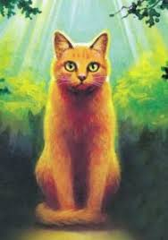
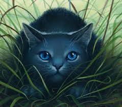
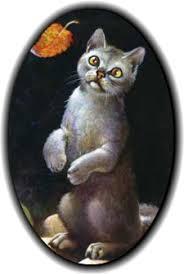

Famous Players
Warriors: Into The Wild
Warriors: Into The Wild is about a house cat named rusty who is curious about what is in the forest. One day he decides to wander out there and is attacked by a wild cat from a clan. the leader of the clan (BlueStar) sees how well rusty fought off the wild cat and invites him to join their clan known as Thunderclan. Their Rusty trains and works his way up to an aprentice, goes on adventures and tries to build trust within his clanmates at the same time. However the ThunderClan cats are in grave danger as the sinister ShadowClan grows stronger every day.
Rusty

A ginger housecat who is now a member of ThunderClan.
Bluestar

A blue-gray she cat who is the leader of ThunderClan and invites Rusty to join
Graypaw

A Gray tom who is an aprentice at ThunderClan. He originally attacked Rusty out in the forest
Personal Testimonial
Warriors into the wild is my favorite book because it has a very good storyline and the characters are likeable.